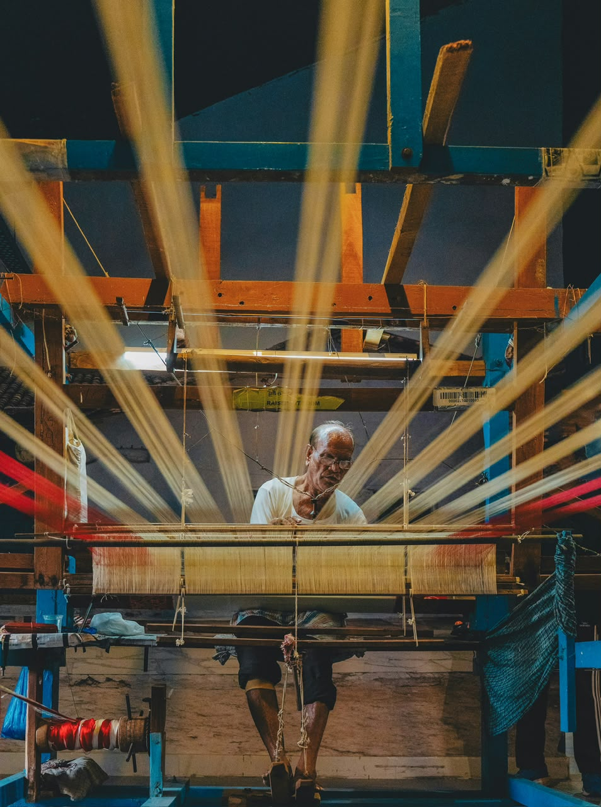
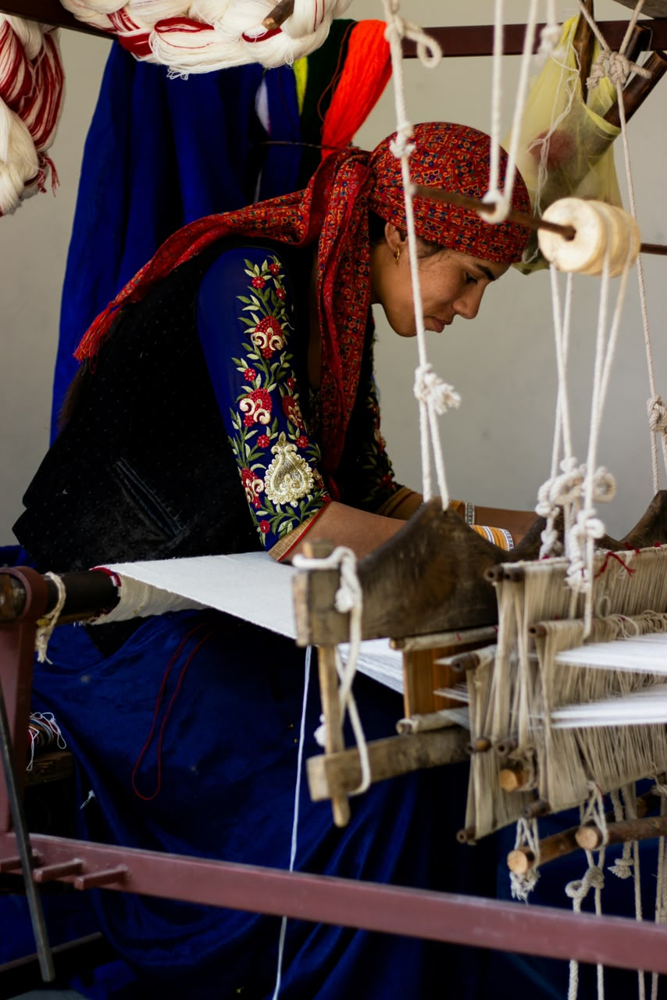
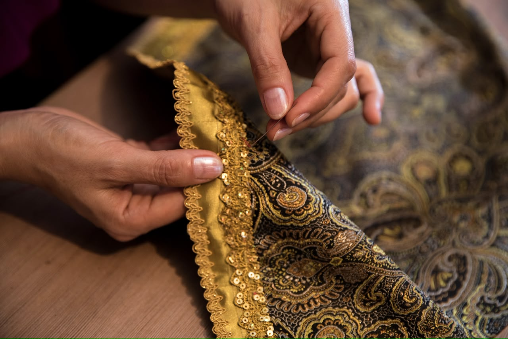
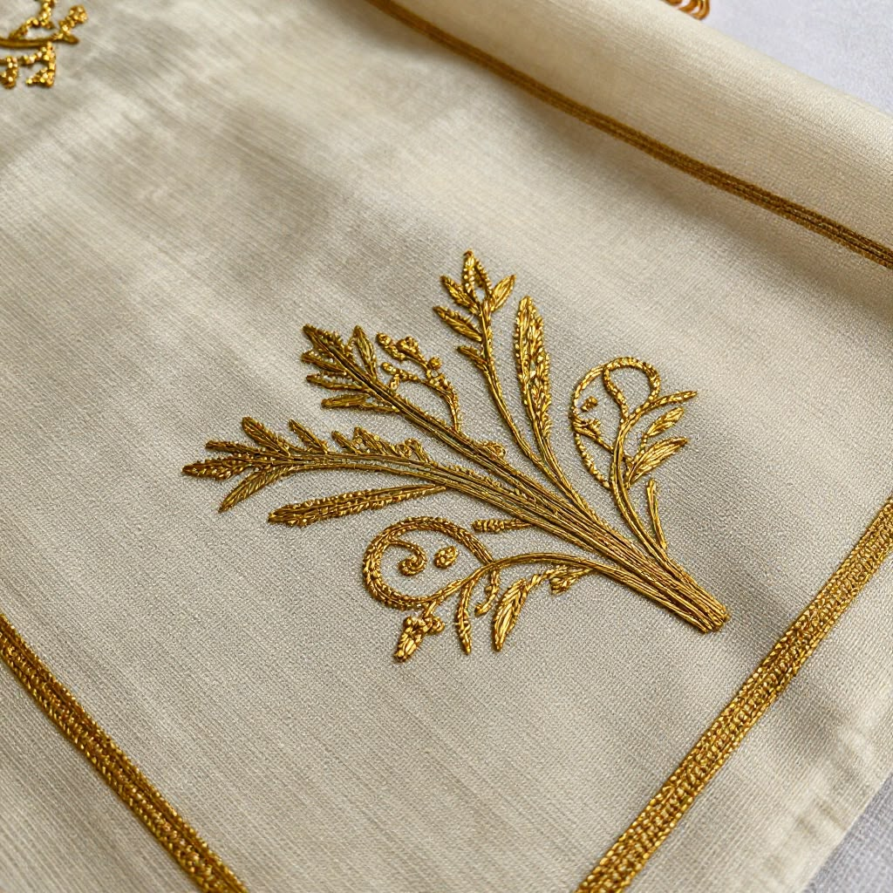
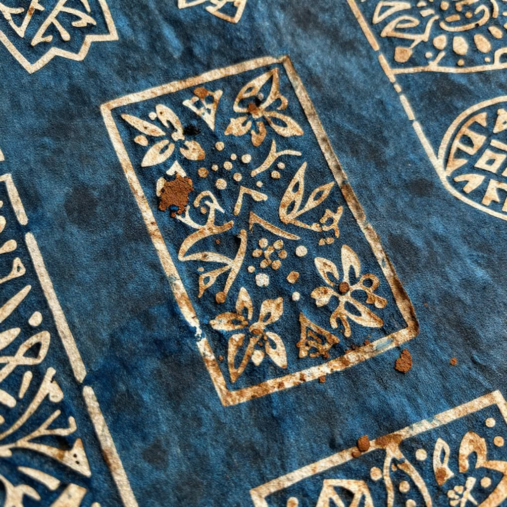
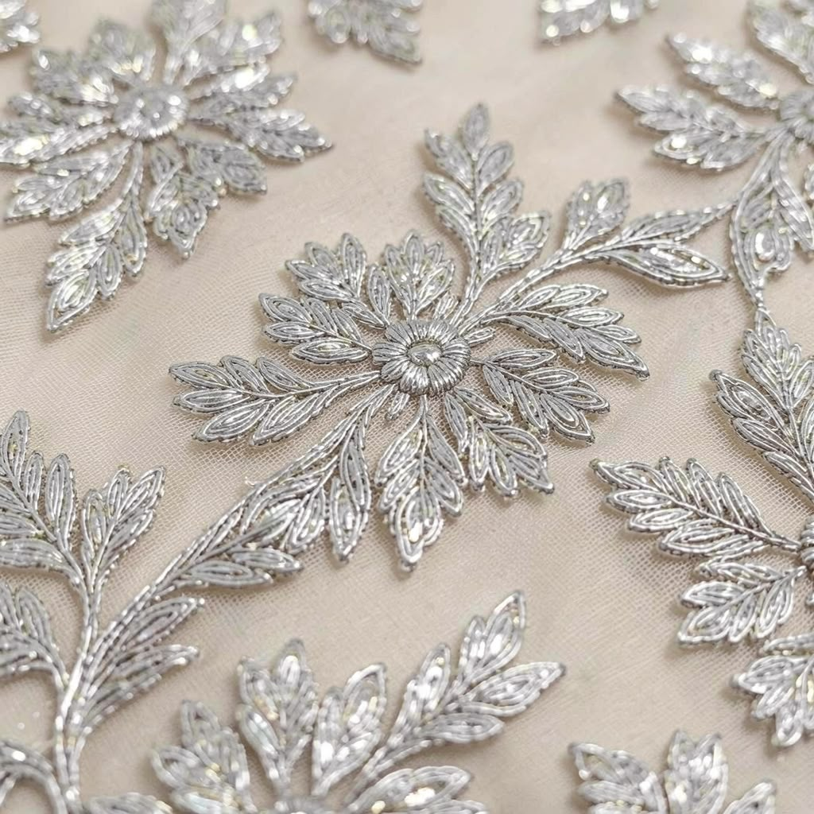
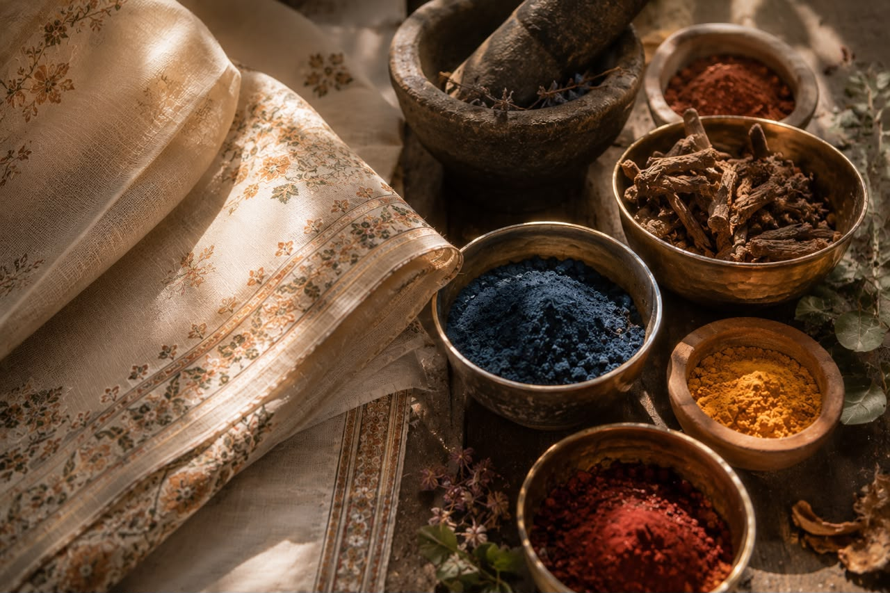

THE HOUSE OF AAMKARI
Where Timeless Indian Craftsmanship Meets The World
Not merely garments. A living archive of Indian craftsmanship, created for women who embody elegance, strength and timeless confidence.
The House
AAMKARI exists to preserve India's extraordinary craft traditions while creating garments that reflect quiet confidence, timeless elegance, and uncompromising craftsmanship. Every thread begins with human hands. Every silhouette carries a story. Every collection honours generations before us.
Heritage
Inspired by centuries of Indian artistry.
Craft
Made patiently by master artisans.
Strength
Created for women who lead with grace.

The Weaver
Every length of fabric begins on a handloom where patience, rhythm and generations of knowledge become part of every thread.

The Printer
Natural pigments, carved wooden blocks and careful repetition create prints that cannot be replicated by machines.

The Embroiderer
Every stitch is placed by hand, carrying stories, precision and quiet dedication into each garment.
Every Amkari piece is made by many hands, but speaks with one soul.
The Craft Journey
Design
Ideas begin with India's living heritage.
Material
Only carefully selected natural textiles.
Handcraft
Every detail completed by skilled artisans.
AAMKARI
A timeless piece enters the House.
OUR CREATIONS
Crafted slowly. Shared thoughtfully.
Every AAMKARI creation is unveiled first through our official Instagram. Follow our journey, discover new pieces and place your order directly with us.
Explore on Instagram →Journal
Stories. Craft. Culture. Ideas. The living archive of AAMKARI.
A Letter From The Founder
AAMKARI was founded by Amreen with a simple belief: that true luxury is not created by machines, but by the patience, wisdom and hands of extraordinary people. Born from a deep admiration for India's living craft traditions, this House exists to preserve the stories woven into every thread, every block print and every hand-finished garment. Inspired by her daughter, Aayesha, AAMKARI is also a promise to the next generation—a promise that India's timeless artistry will not merely survive, but flourish. Every collection we create honours the artisans who came before us, empowers the makers of today, and preserves a heritage for those yet to come. This is more than a fashion house. It is an archive of craftsmanship. A celebration of modest elegance. And an enduring tribute to India's soul. Thank you for becoming part of our journey.
With gratitude,
Amreen
Founder, AAMKARI
Signature Crafts
Every AAMKARI garment begins with centuries of Indian craftsmanship, transformed into timeless modest luxury.

Chanderi Silk
Feather-light, luminous and elegant. Woven by generations of master artisans, Chanderi represents the quiet luxury of India.
Read Chapter →
Bagh Printing
Hand-carved wooden blocks, natural dyes, and centuries-old traditions from the heart of Madhya Pradesh.
Read Chapter →
Hand Embroidery
Every stitch carries patience, precision, and the hands of artisans preserving timeless traditions.
Read Chapter →
Natural Dyes
Inspired by nature, coloured with earth, flowers, roots, and heritage.
Read Chapter →